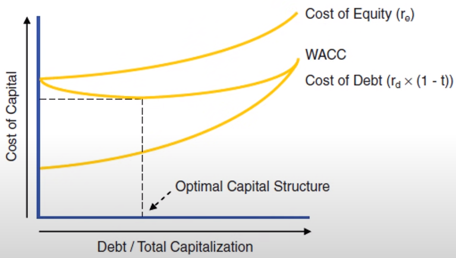
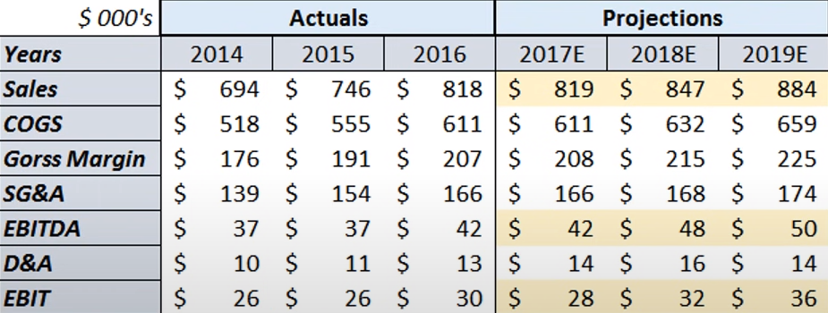
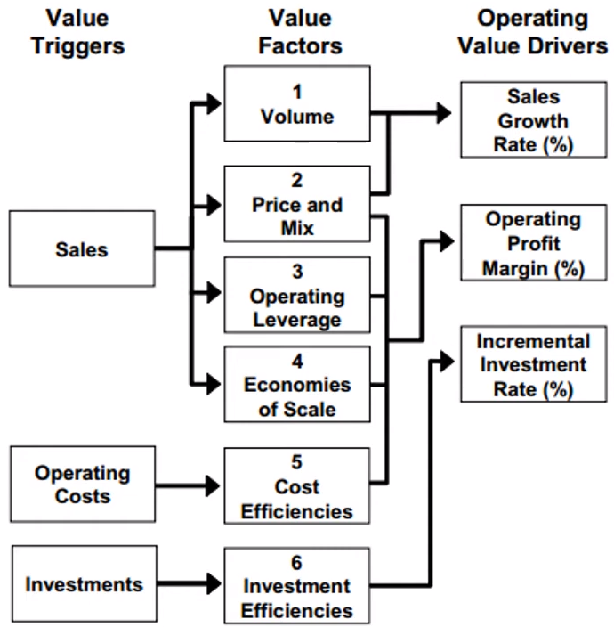
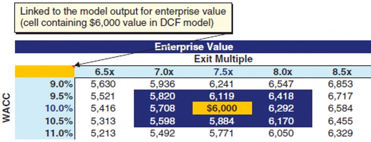
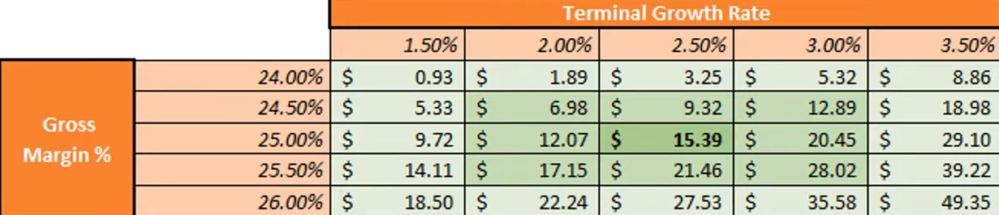

Valuation
Misc
- TL;DR;
- In order to be considered, a project’s Rate of Return must exceed the company’s Cost of Capital which deems it as a good investment. Then, out of the projects that exceed the company’s Cost of Capital, the project with the largest Rate of Return is, in general, considered the best project to invest in.
- Other Factors
- Net Present Value (NPV): While the rate of return for a project may be less than another, its NPV might be greater due its duration being longer. Therefore, its total value might be greater.
- Payment Schedule: Due to the Time Value of Money, a project that pays earlier rather than later, with all else being equal, is more valuable.
- Payout duration: A project with payouts over a longer time period may be more desirable for a given business environment.
- Other Factors
- Recommended
- Rates of Return: AIRR,MIRR > IRR
Comparison
Feature AIRR MIRR Calculation method Average return on each invested dollar IRR of the terminal value of cash flows Multiple solutions No Possible Compatibility with NPV Consistent May not be Reinvestment rate Assumes constant rate Explicitly factors in Ease of understanding Simple and intuitive Complex and less intuitive Computational complexity Can be expensive for complex cash flows Less computationally intensive
- Cost of Capital: WACC
- Rates of Return: AIRR,MIRR > IRR
- For small businesses, I haven’t seen anything to use in place of Cost of Capital (ie. WACC), but AIRR and MIRR is still available to compare projects.
- In order to be considered, a project’s Rate of Return must exceed the company’s Cost of Capital which deems it as a good investment. Then, out of the projects that exceed the company’s Cost of Capital, the project with the largest Rate of Return is, in general, considered the best project to invest in.
Rates of Return
Rate of Return (RoR)
\[ \text{RoR} = \frac{\operatorname{current\_value - \operatorname{initial\_value}}}{\operatorname{initial\_value}} \times 100 \]
- The net gain or loss of an investment over a specified time period, expressed as a percentage of the investment’s initial cost. The rate of return disregards some key factors in an investment, like the time value of money, the timing and size of cash flows, and the risk and uncertainty associated with any investment or in the case of stocks — taxes and investing fees.
- To adjust for inflation, just subtract the inflation rate (aka Real Rate of Return).
- Types
- Arithmetic: \(\sum_{i=1}^T r_i\) where \(r_i\) is the return for the time period, \(i\).
- Geometric (aka Compound Annual Growth Rate): \([(1+r_1) \times (1+r_2) \times \cdots \times (1+r_T)]^{1/T} - 1\)
- Includes compounding effect.
- At most is the Arithmetic average but usually less
- Annual Percentage Rate (APR): \(m \times k_m\) where \(m\) is the number of compounding periods in a year and \(k_m\) is the periodic rate
- Conventional method of quoting interest rates
- Ignores compounding effect
- e.g. a credit card with a 1% monthly interest rate has an \(\text{APR} = 0.01 \times 12 = 0.12 \;\operatorname{or}\; 12\%\)
- Effective Annual Rate (EAR): \((1+k_m)^m - 1\)
- APR that takes into account the compounding effect.
- e.g. a credit card with a monthly interest rate of 1.25%, what is the EAR? \(\text{EAR} = (1 + 0.0125)^{12}-1 = 0.1608 \;\text{or}\; 16.08\%\)
Internal Rate of Return (IRR)
A flawed indicator of strength for capital projects. It should only be used when a project has no interim cashflows or is somehow able reinvest those interim cashflows at the same IRR for the duration of the project (See disadvantages).
The internal rate of return is a discount rate that makes the net present value (NPV) of all cash flows from a particular project or investment equal to zero. In general, projects with higher IRRs are more favorable than projects with lower IRRs, as the expected rate of return on these projects is greater.
Formula
\[ NPV = \sum_{t=0}^T \frac{C_t}{(1+r)^t} = 0 \]
- Solve for \(r\) to get IRR
- Note that \(t=0\) is the initial investment which makes the denominator 1 and therefore that particular \(\text{PV}\) (Present Value) is just \(C_0\). Since it’s a cash outlay (i.e. cost), it will be a negative value.
- Variables
- \(T\): Total number of time periods
- \(t\): Time Period
- \(C_t\): Net cash inflow (or outflow) for time period, t
- \(r\): Internal Rate of Return
Disadvantages
- Larger projects with lower yields but higher net cash proceeds may be put at an analytical disadvantage when using IRR since IRR is a percentage and not in dollars.
- Assumes cash flows will be reinvested into projects with same IRR for each compounding year of the project. Business enviroments change, so it’s not reasonable to assume investment opportuniities with the samee IRR will be available every year. This leads to a more optimistic projection than there should be. (Video)
- e.g. the cash flow recieved in year 1 is automatically invested into another project with same IRR.
- Using MIRR instead of IRR solves this issue.

- Shows how IRR gets inflated as the cost of capital increases.
- Does not consider differences in the duration of projects. A longer term project may be more favorable even if it has a lower IRR, because it is generating a substantial cash flow for a longer period that would be difficult to replace if the shorter term project was chosen.
Modified Internal Rate of Return (MIRR)
Better alternative to IRR that assumes the cash inflows are reinvested at cost of capital of the company instead of at the IRR. (video1, video2)
Weaknesses
- Involves calculating the IRR of the terminal value of the cash flows,making it less transparent than AIRR.
- Similar to IRR, MIRR can sometimes have multiple solutions, leading to confusion.
- Situations:
- Sign changes in non-periodic cash flows:
- If a project has non-periodic cash flows that switch between positive and negative, it can create multiple points where the present value of the terminal value equals the initial investment. Each of these points corresponds to a potential MIRR solution.
- Large initial investment followed by small positive cash flows:
- When a project has a significant initial investment followed by a series of small positive cash flows, there might be multiple interest rates at which the present value of the terminal value (discounted future cash flows) equals the initial investment.
- High discount rates and long-term negative cash flows:
- If a project has a high discount rate and experiences prolonged negative cash flows, there might be multiple points where the present value of the terminal value (discounted future cash flows) equals the initial investment.
- Projects with high variability in cash flows:
- Projects with highly variable and unpredictable cash flows, especially those with large spikes or dips, can be more susceptible to having multiple MIRR solutions due to the difficulty in accurately estimating the terminal value.
- Rounding errors in calculations
- Sign changes in non-periodic cash flows:
- Solutions:
- Analyze the cash flow pattern: Understand the underlying reasons for multiple solutions and whether they represent realistic scenarios.
- Perform sensitivity analysis on how changing the discount rate or reinvestment rate affects the number and value of MIRR solutions.
- Consider alternative metrics
- Situations:
- In some cases, MIRR can lead to different decisions than NPV, creating inconsistencies.
Formula
\[ \text{MIRR} = \left(\frac{\text{FV}}{\text{PV}} \right)^{\LARGE{\frac{1}{n}}} - 1 \]
Variables
- \(n\): Project horizon, i.e. number of periods where cashflows occur
- \(\text{FV}\): The sum of the future values of each cash inflow (i.e. positive cash flow), aka Terminal Cash Flow. Using an assumed reinvestment rate which is realistically different than the company’s cost of capital, each positive cash inflow is projeced forward (i.e. compounded) to the value at the last year of the project. (See Time Value of Money for the formula)
- e.g. For a project with a 5yr horizon, a future value for the cash inflow of year 2 is its projected value at year 5.
- \(\text{PV}\): The absolute sum of the present values of each cash outflow (i.e. negative cash flow), aka Cash Outlay (e.g. costs, investments). Each cash outlay is projected (i.e. discounted) back to year 0 value using the company’s borrowing rate. (See IRR for the formula, NPV is the sum of PVs)
Example: 7 year Project (link)
Timeline Year 0 Year 1 Year 2 Year 3 Year 4 Year 5 Year 6 Year 7 Cash Outlay 10000.00 4500.00 950.00 Cash Inflow 6000.00 7500.00 1250.00 8010.00 9000.00 FV,PV at 12.5% 4000.00 750.62 9610.84 10678.71 1582.03 9011.25 Total CF 39882.83 Total Outlay 14750.62 reinvestment_rate <- 0.125 borrowing_rate <- 0.08 first_co <- 10000.00 cash_outlays <- c(4500.00, 950.00) cash_flows <- c(6000.00, 7500.00, 1250.00, 8010.00) final_cf <- 9000.00 project_horizon <- length(c(cash_outlays, cash_flows, final_cf)) # 7yrs calc_pv <- function(c, disc_t, r) { c / ((1 + r)^disc_t) } calc_fv <- function(c, comp_t, r) { c * ((1 + r)^comp_t) } pv_vec <- purrr::map2_dbl( cash_outlays, seq(length(cash_outlays)), # 1, 2 calc_pv, r = borrowing_rate ) fv_vec <- purrr::map2_dbl( cash_flows, rev(seq(length(cash_flows))), # 4, 3, 2, 1 calc_fv, r = reinvestment_rate ) total_cf_adj <- sum(fv_vec) + final_cf total_co_adj <- sum(pv_vec) + first_co mirr <- function(fv, pv, T) { ((fv / pv)^(1/T)) - 1 } mirr(total_cf_adj, total_co_adj, project_horizon) #> [1] 0.1501348- If the cost of capital is less the 15%, then this is a good investment.
- Note the opposite order used for disc_t and comp_t when iterating through the cash outlays and cash flows.
- e.g. 4500 needs to be discounted 1 year to Year 0 dollars and 6000 needs to be compounded 4 years to Year 7 dollars
Example:
Description:
- The US Auto Company, maker of the AerTron hovercar, bought a new die press for the lift propeller housing of their new model. The die press, installed, costs $24 M and a set of dies costs an additional $12 M and has a life of 4 years. The net revenue for this machine is $8 M annually. USAC plans to replace the die set during year 4 for the same $12 M that the original cost, and then run the system for another 4 years. USAC pays 9.5% for borrowed money and expects to earn 16.5% on invested money. What is the MIRR for this system?
Data and Code:
Year 0 Year 1 Year 2 Year 3 Year 4 Year 5 Year 6 Year 7 Year 8 Cash Outlay 36 4 Cash Inflow 8 8 8 8 8 8 8 reinvestment_rate <- 0.165 borrowing_rate <- 0.095 first_co <- 36 cash_outlays <- 4 cash_flows <- c(8, 8, 8, 8, 8, 8) final_cf <- 8 project_horizon <- length(c(cash_outlays, cash_flows, final_cf)) # 8yrs calc_pv <- function(c, disc_t, r) { c / ((1 + r)^disc_t) } calc_fv <- function(c, comp_t, r) { c * ((1 + r)^comp_t) } pv_vec <- purrr::map2_dbl( cash_outlays, 4, calc_pv, r = borrowing_rate ) fv_vec <- purrr::map2_dbl( cash_flows, c(7,6,5,3,2,1), calc_fv, r = reinvestment_rate ) total_cf_adj <- sum(fv_vec) + final_cf total_co_adj <- sum(pv_vec) + first_co mirr <- function(fv, pv, T) { ((fv / pv)^(1/T)) - 1 } mirr(total_cf_adj, total_co_adj, project_horizon) #> [1] 0.1275095- In Year 0, there is an initial investment of $36M since the cost of the die press plus installation cost is $24M and set of dies cost $12M.
- In Year 4, the die set is replaced. The question says the die set is replaced “during year 4.” Since the answer is what it is, this evidently means the company gets the positive cash flow of the $8M and incurs the cost of the new die set of $12M which leads to an outflow of $4M.
- Would’ve made more sense if they would’ve said the die set was replaced at the end of year 4 IMO. My first attempt assumed they didn’t receive the cash inflow $8M for that year.
- The Year 4 outflow is discounted 4 years, and each cash inflow (except the last one) is compounded to Year 8. Note that in the code, Year 4 is skipped since it’s an outflow year.
Average Internal Rate of Return (AIRR)
- AIRR overcomes many of the limitations of IRR by calculating the average rate of return on each invested dollar at each point in time, resulting in a single, unambiguous measure of project profitability. It addresses the issues with multiplicity, complex numbers, and incompatibility with NPV, providing a more reliable and interpretable measure for investment decisions. (Magni, 2010)
- Magni listed 21 flaws of IRR, see his paper “Average Internal Rate of Return and Investment Decisions: A New Perspective” for details.
- I didn’t include the formulation here, but AIRR can be represented as weighted average. See video for details.
- Weaknesses:
- Assumes a constant reinvestment rate, which may not be realistic for all situations.
- Can be computationally expensive for complex cash flows
- Notes from Videos: AIRR: A Comprehensive Approach to Rate of Return and Investment Decisions
- Formula Using Income and Capital
\[ \begin{align} \text{AIRR} &= \frac{\text{Total Income}}{\text{Total Capital}}\\ &= \frac{I_1 + \frac{I_2}{1+r} + \frac{I_2}{(1+r)^2} + \cdots + \frac{I_n}{(1+r)^{n-1}}}{C_0 + \frac{C_1}{1+r} + \frac{C_2}{(1+r)^2} + \cdots + \frac{C_{n-1}}{(1+r)^{n-1}}} \\ &= \frac{\sum_{i = 1}^n \frac{I_i}{(1+r)^{i-1}}}{\sum_{j = 1}^{n} \frac{C_{j-1}}{(1+r)^{j-1}}} \end{align} \]- \(I\): The income of the project
- \(C\): The capital invested in the project where \(C_0\) is the initial investment. While the final period of the project will have a cashflow, it will not have a capital investment.
- \(r\): The cost of capital
- \(n\): The total number of periods of the project not including the initial investment period.
- Formula Using Net Present Value and Cash Flows
\[ \text{AIRR} = r + \frac{\text{NPV}(1+r)}{\text{PV[C]}} \]- \(r\): The cost of capital
- \(NPV\): Net Present Value of the cash flows
- \(PV[C]\): The total cost of capital discounted the present value (i.e. Present Value of Total Capital)
- \(\frac{\text{NPV}}{\text{PV[C]}}\): This is the net present value return per unit of capital
- \(\frac{\text{NPV}(1+r)}{\text{PV[C]}}\): This is the Excess Return Rate. It tells investors how much more they are making beyond the cost of capital rate.
- Formula Using Time-Varying Cost of Capital
\[ \begin{align} \text{AIRR} &= \frac{I_1 + \frac{I_2}{1+r_2} + \cdots + \frac{I_n}{(1+r_2)\cdots(1+r_n)}}{C_0 + \frac{C_1}{1+r_1} + \cdots + \frac{C_{n-1}}{(1+r_1)\cdots(1+r_{n-1})}} \\ &= (1+r_1) \cdot \frac{\frac{I_1}{1+r_1} + \cdots + \frac{I_n}{(1+r_1) \cdots (1+r_n)}}{C_0 + \frac{C_1}{1+r_1} + \frac{C_{n-1}}{(1+r_1)\cdots(1+r_{n-1})}}\\ &= (1+r_1) \cdot \frac{\text{PV[I]}}{\text{PV[C]}} \end{align} \]\(\text{PV[I]}\): Total income of the project that has been discounted to the present value (i.e. Present Value of Total Income)
\(r_i\): The time-varying cost of capital where \(i\) represents the period of the project.
\(n\): The total number of periods of the project not including the initial investment period.
The Minimal Attractive Cost of Capital (MARR) replaces the cost of capital (since we now have multiple CoCs) as the threshold for an acceptable investment
\[ \begin{align} \text{MARR} &= (1+r_1) \cdot \frac{\frac{r_1C_0}{1+r_1}+\cdots+\frac{r_n C_{n-1}}{(1+r_1)\cdots(1+r_n)}}{C_0 + \frac{C_1}{1+r_1}+\cdots+\frac{C_{n-1}}{(1+r_1)\cdots(1+r_{n-1})}} \\ &= (1+r_1) \cdot \frac{\text{PV[R]}}{\text{PV[C]}} \\ &= \text{AIRR} - \frac{\text{NPV}(1+r_1)}{\text{PV[C]}} \end{align} \]- \(\text{PV[R]}\): The time-varying market return discounted to the present value. The amount of return you’d expect from a minimally-acceptable, alternative investment using these capitals and these costs of capital over the same length of time (e.g. treasury bonds).
Net Present Value using a Time-Varying CoC
\[ \begin{align} \text{NPV} &= F_0 + \frac{F_1}{1+r_1} + \cdots + \frac{F_n}{(1+r_1)\cdots(1+r_n)} \\ &= \text{PV[C]} \times \frac{\text{AIRR}-\text{MARR}}{1+r_1} \end{align} \]
- The amount of value that exceeds the minimally acceptable investment’s return.
- This is a reformulation of the “Formula using Net Present Value and Cash Flows”
- \(\text{PV[C]}\) represents the size of the investment
- \(\frac{\text{AIRR}-\text{MARR}}{1+r_1}\) represents the efficiency of the project
- Example: Net Present Value and Cash Flows Formula for AIRR
Calculate Cash Flows
Time 0 1 2 Income 375 225 Capital 600 400 Depreciation 200 400 Cash Flow -600 575 625 - There is an initial capital investment of $600 that depreciates each year of the project. Capital decreases from 600 to 400 which is a depreciation of $200 and then from $400 to 0 which is a depreciation of $400.
- Depreciation is added to Income (aka earnings) to get Cash Flow (See Discount Cash Flow Model >> Calculate FCF from projected variables for each year to the horizon)
Calculate NPV
\[ \text{NPV} = -600 + \frac{575}{1+0.15} + \frac{625}{(1 + 0.15)^2} = 372.60 \]
- Where the cost of capital is 15%
Calculate AIRR
\[ \text{AIRR} = 0.15 + \frac{372.60 \times (1+0.15)}{600 + \frac{400}{1 + 0.15}}= 0.602 = 60.2\% \]
Cost of Capital
- The purpose of calculating Cost of Capital is to determine the minimum rate of return that a company should generate to satisfy its investors and creditors. It is commonly used in capital budgeting and valuation processes. When a company is considering new investment projects, the Cost of Capital is often used as the discount rate to evaluate the project’s feasibility. If the project’s expected rate of return is higher than the Cost of Capital, it may be considered a worthwhile investment.
- For DCF analysis
- For diverse companies (e.g. GE), it’s better to calculate a CoC for each division.
- The lower the CoC, the more valuable the business.
Weighted Average Cost of Capital (WACC)
The weighted cost of a company’s invested capital (both debt and equity). Recommend method to calculate Cost of Capital.
\[\text{WACC} = w_e \cdot K_e + w_d \cdot K_d\]
- \(w_e\): The proportion of equity to the company’s market value of capital, \(\frac{E}{E+D}\)
- \(D\) is the market value of Debt
- \(E\) is the market value of Equity
- \(w_d\): The proportion of debt to the company’s market value of capital, \(\frac{D}{D + E}\)
- \(K_e\): Cost of Equity - The required annual rate of return that a company’s equity investors expect to receive (includes dividends).
- \(K_d\): After-Tax Cost of Debt
- \(w_e\): The proportion of equity to the company’s market value of capital, \(\frac{E}{E+D}\)
The current proportions, \(w_e\) and \(w_d\), should be compared with historical weight values of the company and a decision should be made on whether these proportions accurately represent the future capital structure (i.e the proportions) of the company over the next 5-10 years.
- Example: A company has recently made an acquisition of another company, therefore, temporarily inflating it’s debt proportion. This debt might be payed off within a few years which will reduced its debt proportion of capital. Using the debt proportion prior to the debt being paid would bias the WACC.
Cost of Equity
Notes from Video: Estimating Cost Of Equity For WACC - DCF Model Insights
(Basic) Capital Asset Pricing Model (CAPM)
\[ K_e = R_f + \beta_L\; (R_m - R_f) \]
- \(R_f\): Risk-free rate of return (Time Value of Money). A rate of a U.S. T-Bill, T-Note, or T-Bond is typically used.
- \(R_m\): Expected Market rate of return
- \(\beta_L\): (Levered Beta) Risk estimate or a company’s stock beta or a similar public company’s stock beta (Reward for bearing systematic risk). Companies with higher betas will have higher values of \(K_e\)
- For private companies, the beta from a peer publicly traded company or the average beta of a group of peer publicly traded companies can be used. Private companies may have differenct capital structures (see WACC weights), so each peer company’s beta from the peer group of companies needs be unlevered (i.e. remove influence of leverage) to obtain their Asset Betas.
Beta on places like Yahoo Finance is a Levered Beta. That beta is affected by that companies capital structure and its stock price’s day-to-day fluctuations. The asset beta is the beta of the industry or sector.
Unlevering Beta
\[ \beta_U = \frac{\beta_L}{1 + \frac{D}{E}(1-\text{tax rate})} \]
- \(\beta_U\): Unlevered Beta
- \(\beta_L\): Levered Beta
- \(D/E\): Debt to Equity Ratio
- \(\text{tax rate}\): The marginal tax rate
After unlevering the beta for each company in the peer group, the average is taken to get the peer group’s asset beta.
Finally the peer group’s asset beta is relevered using the company’s target capital structure
\[ \beta_L = \beta_U(1+\frac{D}{E}(1-\text{tax rate})) \]
- The company’s target capital structure is oftentimes its current capital structure
- The middle yellow line shows how the WACC goes down as the company takes on a small amount debt which increases its value (lower WACC) since the interest on the debt is tax deductible. But, if the company takes on too much debt, its WACC increases which decreases its value since its risk of default gets higher.
- The optimal amount of debt is difficult to determine by the analyst, so it’s assumed that management’s goal is to optimize value. Therefore, unless under unusual circumstances (e.g. post-acquisition period), the company should be at its target capital structure (i.e. optimal \(w_d\)) or moving towards it.
- The company’s target capital structure is oftentimes its current capital structure
- For private companies, the beta from a peer publicly traded company or the average beta of a group of peer publicly traded companies can be used. Private companies may have differenct capital structures (see WACC weights), so each peer company’s beta from the peer group of companies needs be unlevered (i.e. remove influence of leverage) to obtain their Asset Betas.
- \(R_m - R_f\) The market risk premium is the amount of systemic risk.
- Systematic Risk (aka Non-Diversifiable Risk): The market risk that all companies are exposed to (i.e. economy).
- From 1926 to 2011, Ibbotson calculate the market risk premium to be 6.62%. Various Wall Street firms calculated it to be between 5-8%.
(Advanced) Capital Asset Pricing Model (CAPM)
\[ K_e = R_f + \beta_L\; (R_m - R_f) + R_s + \text{CRP} + R_z \]
- \(R_s\): Size Risk Premium - The smaller the company, the riskier it is, and the higher the risk size premium. Larger companies are generally more diversified (e.g. more stores to offset local busines conditions)
- Use Ibbotson/Kroll SBBI yearbook’s “Size Premium” value. Provides consistency among analysts. (See R >> Documents >> Finance >> 2016 SBBI, Ch.7, pg 7-16 (pg140)) Kroll now puts out a monthly version for $1200 🙄.
- \(\text{CRP}\): Country Risk Premium - Risk associated with investing in an international company. (e.g. political instability, volatile exchange rates, economic turmoil)
- Use Default Spread from NYU Stern’s country spread page
- \(R_z\): Specific Company Risk Premium (SCRP) (Reward for bearing unsystematic risk)
Unsystematic Risk: The risk that affects a single company or a small group of companies. Unsystematic risk is lowered through diversification. Larger companies are typically more diversified than smaller companies.
No standardized formula for calculating this risk and is usually based on the analyst’s judgement. Factors include the financial statement, comparative ratio analysis, and qualitative matters such as a site visit and management interviews.
Highland Global method for estimating SCRP

- Link to white paper (Also in R >> Documents >> Finance)
- More appropiate for older industrial companies than new companies. (See Issues section)
- Process
- For each factor’s value of the company, get the appropriate Assignment Rating in the left-most column
- Example shows this value at the bottom of each factor column where the highlighted cell’s are the company’s factor values.
- Average all the Assignment Ratings to get the SCRP estimate
- For this example, estimated SCRP = 3.86%
- For each factor’s value of the company, get the appropriate Assignment Rating in the left-most column
- Factors
- Revenue Growth measured by either Compound Annual Growth Rate over the last 3 to 5yrs or Forecasted Growth Rate
- Financial Risk measured by Total Debt Ratio
- Use the most recent fiscal year-end balance sheet, unless there’s significant interim or projected change in teh firm’s capital structure
- Operation Risk measured by Fixed Costs/Sales
- In absence of a major cost cutting intitative to be implemented in the foreseeable future, use the most recent fiscal year data.
- Profitability measured by Net Profit Margin
- For stable firms, use the most recent fiscal year net profit margin on an adjusted basis.
- For firms with erratic earnings or profitability, use a 3 to 4yr average of the net profit margin or the projected net profit margin if the erratic behavior is expected to subside.
- If earnings are not adjusted for the previous 3 to 5yrs, use the most recent fiscal year.
- Industry Risk measured by Firm Return on Asset (ROA)/ Industry ROA
- Return on Asset measures the ability of the firm to generate revenues with its asset base.
- Economic Risk measured by Firm ROA/GDP Change
- Ratio suggests that economic risk for the firm is a function of its ability to generate a return on its asset bas relative to the overall economy’s ability.
- Use most recent GDP change (i.e growth or contraction %)
- Customer Concentration measured by Total Sales to Top 5 Customers/Firm’s Total Sales
- Use most recent fiscal year’s sales figures unless there’s an anticipated change for the future (e.g. loss of the one of the top five customers in the next year)
- Issues
- Needs adjustment for Tech companies.
- Tech companies don’t have many fixed costs because they don’t have a lot of tangible assets. So, there would need to be some sort of replacement measure for Operational Risk
- Return on Equity would be more appropriate for estimating Industry Risk (and Economic?)
- Econoomic Risk is essentially Country Risk, so using this measure in the Advanced CAPM is potentially double counting.
- Needs adjustment for Tech companies.
- \(R_s\): Size Risk Premium - The smaller the company, the riskier it is, and the higher the risk size premium. Larger companies are generally more diversified (e.g. more stores to offset local busines conditions)
Build-Up Approach Model (BAM)
\[ K_e = R_f + R_m + \text{IRP}_i + R_s + CRP + R_z \]
\(\text{IRP}_i\): Industry Risk Premium - The amount investors expect the future return of this industry to exceed the market as a whole.
\[ \text{IRP}_i = (Ri_i \times \text{ERP}) - \text{ERP} \]
- \(Ri_i\): The risk index for the industry.
- \(\text{ERP}\): The expected equity risk premium
- Replaces the \(\beta_a\) in the CAPM to take into account systemic risk.
- Use Valuation Handbook – Guide to Cost of Capital’s “Industry Risk Premia” value. (See R >> Documents >> Finance >> 2016 Valuation Handbook, Appendix 3a) Kroll now puts out a monthly version for $1200 🙄.
{kind=link}
After-Tax Cost of Debt
Notes from Video: Estimating The Cost Of Debt For WACC - DCF Model Insights
List of instruments that should be considered as Debt in the calculations below:
- Long and Short-Term interest-bearing obligations (e.g Loans, Bonds)
- Operating Leases (e.g. An airline that leases out its planes.) (Video)
Methods

Yield-to-Maturity (Most Accurate)
- Variables required for each bond:
- Market Price: The Price the bond is being traded at
- Amount: The amount the bond was issued for
- Yield to Maturity: Rate at which the current market price of the bond is equal to the present value of all the cash flows from the bond
- Amount was difficult to find. I found it along with the other variables by using a combination of websites, finra.org and bondsupermart.com. Each bond has a few different ids, so I suspect the amount can obtained through the SEC or somewhere using them if those websites die.
- Overall Process
- Calculate Yield-to-Maturity (YTM) of all publicly traded company debt
- Calculate the weighted average of all debt instruments
- Multiply result by (1 - Tax Rate) to get \(K_d\)
- Steps
Calculate each bond’s discount rate (DR)
\[ \text{DR}_i = \frac{\text{Price}_i}{100} \]
- \(i\): The index for each bond the company has issued
- Prices below 100 are trading below market value
- Prices above 100 are trading above market value (aka at a premium)
Calculate the Market Value of Debt (MVD)
\[ \text{MVD} = \sum_{i=1}^N \text{MVB}_i = \sum_{i=1}^N \text{DR}_i \times \text{A}_i \]
- \(A\): The amount of the bond
- The market value of a bond (MVB) is the discount rate (DR) \(\times\) the amount of the bond (A). Therefore, the sum is the market value of the company’s debt.
For each bond, calculate Proportion of MVD (pMVD)
\[ \text{pMVD}_i = \frac{\text{MVB}_i}{\text{MVD}} \]
- Calculates each bond’s proportion of the total debt
Calculate After-Tax Cost of Debt
\[ K_{d} = (1- \text{Tax Rate}) \times \sum_{i = 1}^N \text{pMVD}_i \times \text{YTM}_i \]
- \(\text{YTM}\): Yield to Maturity
- \(\text{Tax Rate}\): The company’s effective tax rate in its most recent quarter.
- The proportion (pMVD) \(\times\) the bond’s yield to maturity (YTM) is its weighted YTM.
- Variables required for each bond:
Debt Rating (Best of the Rest)
\[ K_d = (\operatorname{Risk Free Rate} + \operatorname{Default Spread}) \times (1 - \operatorname{Tax Rate}) \]
- For cases where the company’s debt may not have market prices readily available. (e.g a mix of bonds and bank debt)
- Not sure how this works if a company has multiple debt instruments that get payed off at different time intervals.
- Maybe compute this value for each debt instrument. Then, multiply each \(K_{d,i}\) by its instrument’s proportion of overall debt as in YTD method above. Then, add them all together.
- \(\text{Default Spread}\): Associated with the company’s credit rating (e.g. AAA, BB+, etc.). Get the company’s rating and look-up the spread for that rating. The company credit ratings seem readily availabe just by googling, but the spreads are a little harder to find. NYU Stern Business School has a page.
- For foreign corporations or corporations that get much of their revenue from other countries (adds in geopolitical risk), you need to add the add the “country spread” to the default spread. NYU Stern’s country spread page.
- \(\text{Risk Free Rate}\): Value that’s used depends upon length of bank loan or maturity date of the bond. (e.g for a 12-year bond or a 12-year loan, use the 10-year treasury yield since it is the closest benchmark)
- \(\text{Tax Rate}\): The company’s effective tax rate in its most recent quarter.
Synthetic Rating
Estimate the credit rating using a company’s financial characteristics
\[ \text{Interest Coverage Ratio} = \frac{\text{EBIT}}{\text{Interest Expenses}} \]
- \(\text{EBIT}\): Typically reported in a company’s income statement
- \(\text{Interest Expense}\): How much interest was payed on its debt (long and short term). Most likely also reported in the company’s financials.
- \(\text{Interest Coverage Ratio}\): The relationship to the rating and therefore the default spread is also on the NYT Stern page
Then, use Debt Rating method to get \(K_d\)
Interest Rate on Bank Debt
\[K_d = \frac{\text{interest expense}\times (1-\text{tax rate})}{\text{total debt}}\]
- Method of last resort if the other methods are not available. Since bank debt isn’t traded, the market value of this debt is unknown. The WACC formula weights are market value based, so a method that take into account the market value would be preferrable.
- \(\text{interest expense}\): Interest paid on company’s current debt
- Since interest expense is tax-deductible, the debt is calculated on an after-tax basis
- \(\text{tax rate}\): Company’s effective tax rate
Discount Cash Flow Model
Fundamental valuation methodology that’s based on the principal that the value of a company can be derived from the Present Value (PV) of it’s projected Free Cash Flow (FCF)
- The valuation implied for a target by a DCF is known as it’s Intrinsic Value, as opposed to its market value.
- Free Cash Flow (FCF) - The cash generated by a company after paying all cash operating expenses and associated taxes, as well as the funding of capex and working capital, but prior to the payment of any interest expense.
Misc
- Notes from
- Advantages
- Cash Flow based: A more fundamental approach to valuation than using multiple-based methodologies
- Market Independent: More insulated from market aberrations such as bubbles and distressed periods
- Self-Sufficient: Doesn’t rely entirely upon truly comparable companies which is important when there are no “pure play” comparables. (e.g. precedent transactions analysis and comparable companies analysis)
- Flexibility: Allows the you to run multiple scenarios (See Sensitivity Analysis)
- Disadvantages
- Depends on Projections: Accurate forecasting is a challenge especially as the forecast horizon lengthens
- Sensitivity to Assumptions: Relatively small changes in variable values can (but not always) result in significant changes to results
- Terminal Value: Can represent 2/3 or more of the valuation, and this value depends on the final period of the forecast horizon which is the most uncertain.
- Assumes a Constant Capital Structure: Capital structure is not allowed to change over the entire entire horizon. (See WACC)
- Pitfalls
- Forecast no less than 7yr (recommended 10+) of cash flows
- Some contracting companies or resource companies like mining corporations can project cash flows out a decade or more.
- Forecasted cash flows should represent no less than 1/3. By extending the horizon as far out as you reasonably can, you lessen the influence of the terminal value in the enterpise value calculation.
- Under-projecting CAPEX
- For companies with a recent acquisition, sometimes analysts under-project CAPEX values which inflates FCF projections. Add an ROI line and see if there’s a lot of volatility (I think this supposed to be projected ROI that you get from analyst reports). If there is a volatility, then your model is unreliable. I guess you’re then supposed to choose another model.
- Forecast no less than 7yr (recommended 10+) of cash flows
Process
- Study the target and determine key performance drivers
- Project FCF
- Calculate WACC
- Determine the terminal value
- Calculate PV and determine valuation
Determine Key Performance Drivers
- Study the target and its sector which includes its business model, financial profie, value proposition for customers, end markets, competitors, and key risks.
- Analyze drivers of sales growth, profitability, and FCF generation with the goal of crafting FCF projections.
- Internal Drivers: new facilities/stores, developing new products, securing new customer contracts, improving operational and/or working capital efficiency, etc.
- External Drivers: acquisitions, end market trends, consumer buying pattern, macroeconomic factors, legislative/regulatory changes, etc.
Project Necessary Variables
- Historical Performance such as past growth rates, profit margins, and other ratios are good indicators of future performance especially for mature companies in non-cyclical sectors.
- 3 years of historical data for growing or mid-size companies or 5 years for blue chip companies is typically representative enough to be predictive of future performance.
- FCF forecast horizon is typically 5yrs but may be longer depending on its sector, stage of development, and performance predictability.
The chosen horizon should reach to where the target’s performance reaches a stead-state or normalized level.
The terminal value depends heavily on the last forecasted value of FCF, so that value needs to be as accurate as possible and representative of the steady-state performance of the company (i.e not much volatility in its earnings)
For a cyclical company, the horizon should be at a period that’s between business cycles, so the company is not likely to be performing at a peak or valley (i.e. steady-state).
Horizon Guidelines
Company’s Competitive Position Excess Returns/Forecast Horizon Slow Growing; Operates in a highly competitive, low margin industry 1 Year Solid company that has advantages such as strong marketing channels, brand recognition, regulatory advantages, etc. 5 Years Early stages of rapid growth; Operates with high barriers to entry; dominant market position or prospects 10 Years - Companies with long-term contracted revenue streams such as natural resources, satellite communications, or utilites should be forecasted out to 10+ years.
- Example: Percentage of Sales Method for COGS, Gross Margin, and SG&A
- Get historical data for Sales (aka Revenue), COGS, Gross Margin, SG&A, EBITDA, D&A, and EBIT for the last 3 to 5 years. Get a consensus of projected estimates for Sales, EBITDA, and EBIT.

- For public companies, projected estimates of Sales, EBITDA, and EBIT for the first 2 or 3 years can obtained from reports generated by other analysts who specialize in the sector. Use the consensus or average of these estimates.
- For private companies, estimates of peer companies in the public sector can used as a proxy
- Sales projections must be consistent with other DCV assumptions, such CAPEX and Working Capital. (e.g. higher top line growth typically requires the support of higher levels of CAPEX and Working Capital)
- For public companies, projected estimates of Sales, EBITDA, and EBIT for the first 2 or 3 years can obtained from reports generated by other analysts who specialize in the sector. Use the consensus or average of these estimates.
- Transform variable amounts to a percentage of sales for each year

- For COGS, Gross Margin, and SG&A, calculate the average percentage (last column). Then, multiply each variable’s average percentage times each projected Sales estimate to get each variable projected estimate for each period of the horizon.
- For projecting COGS and SG&A further, it’s typical to hold Gross Margin and SG&A (as a percentage of Sales) constant. Although, you may want to make a slight adjustment due to company trends or the outlook of the market.
- For D&A projected estimates, subtract EBIT from EBITDA for each period of the horizon to get D&A. The projected D&A values should be consistent with CAPEX projections and D&A historical values (i.e. compare as a percentage of Sales or as a percentage of CAPEX).
- Get historical data for Sales (aka Revenue), COGS, Gross Margin, SG&A, EBITDA, D&A, and EBIT for the last 3 to 5 years. Get a consensus of projected estimates for Sales, EBITDA, and EBIT.
- Projecting Other Variables
- CAPEX can be projected using consensus estimates from analysts’ reports or in the same manner as COGS, Gross Margin, and SG&A by the average percentage of sales methodology.
- If a business is going through unusual circumstances (e.g. merger) analyst reports are recommended.
- Year-over-Year (YoY) Changes in Net Working Capital can be projected in a couple different ways:
- The same manner as COGS, Gross Margin, and SG&A by the average percentage of sales methodology
- (Recommended) By projecting individual components of both current assets and current liabilities for each year in the horizon and calculating YoY NWC from them.
- Accounts Receivable (A/R): \(\text{DSO Ratio} = \frac{\text{AR}}{\text{Sales}} \times 365\)
- Calculate the DSO Ratio for the previous years using the historical data
- Calculate the average DSO Ratio over the previous years.
- Solve for AR to get: \(AR = \frac{\text{DSO Ratio}}{365} \times \text{Sales}\)
- For each year in the horizon, input the average DSO Ratio for \(\text{DSO Ratio}\) and the consensus projected estimate of sales for \(\text{Sales}\). Then, calculate the projected \(AR\).
- Use the same method for:
Inventory:
\[ \text{DIH Ratio} = \left(\frac{\text{Inventory}}{COGS}\right) \times 365 \]
- Or
\[ \text{Inventory Turns} = \left(\frac{\text{COGS}}{\text{Inventory}}\right) \]
Accounts Payable (A/P): \(\text{DPO Ratio} = \left(\frac{\text{AP}}{\text{COGS}}\right) \times 365\)
- Use the Percentage of Sales method for:
- Prepaid Expenses and Other Current Assets
- Accrued Liabilities and Other Liabilities
- Use these projected values to calculate projected Current Assets and projected Current Liabilities. Then the difference is the projected YoY NWC for each period in the horizon
- Accounts Receivable (A/R): \(\text{DSO Ratio} = \frac{\text{AR}}{\text{Sales}} \times 365\)
- CAPEX can be projected using consensus estimates from analysts’ reports or in the same manner as COGS, Gross Margin, and SG&A by the average percentage of sales methodology.
- Historical Performance such as past growth rates, profit margins, and other ratios are good indicators of future performance especially for mature companies in non-cyclical sectors.
Calculate FCF from projected variables for each year to the horizon
\[ \text{FCF}_i = \text{NOPAT}_i - \text{CAPEX}_i - \text{Net Working Capital}_i + \text{D\&A}_i \]
- Net Operating Profit After Taxes (NOPAT): \(\text{NOPAT} = \text{EBIT} - \text{Taxes}\)
- If the company had been losing money but is expected to become more profitable, then effective tax rate will be too low. Therefore the marginal tax rate should be used
- Use effective tax rate if the company is large and stable or already growing and doesn’t use tax credits, nondeductible expenses (e.g. gov’t fines), deferred tax asset valuation allowances, or other company-specific tax policies. Otherwise, you should use the marginal tax rate.
- Net Operating Profit After Taxes (NOPAT): \(\text{NOPAT} = \text{EBIT} - \text{Taxes}\)
Determining the Terminal Value
A Terminal Value is used to capture the remaining value of the FCF beyond the projection period. Typically, around 2/3 of the overall valuation depends on this terminal value.
It’s based on the value of FCF or EBITDA in the final year of the projection period (i.e. final year in the horizon). Therefore, the projected values in the final year are very important
End-of-Year vs. Mid-Year calculations
- Formulas for both End-of-Year and Mid-Year are given in these last two sections, but FCF are usually generated throughout the year rather than at year-end. So, it’s typically discounted using the mid-year convention.
- The exception is the EMM calculation, since it uses LTM trading multiples for a calendar year end EBITDA (or EBIT). So it’s recommended to use the End-of-Year convention.
- Using the Mid-Year convention results in a slightly higher valuation due to the fact that FCF is received sooner.
- If a company does only receive its cash flows at the end of the year, then the End-of-Year convention should be used.
- Formulas for both End-of-Year and Mid-Year are given in these last two sections, but FCF are usually generated throughout the year rather than at year-end. So, it’s typically discounted using the mid-year convention.
Exit Multiple Method (EMM)
\[ \text{Terminal Value} = \text{EBITDA}_T \times \text{Exit Multiple} \]
- \(T\): The final year of the projected period (aka horizon)
- Determines the remaining FCF by means of a multiple. This multiple is typically the average of the Last-Twelve-Month (LTM) EBITDA multiples of comparable companies.
- As current multiples may be affected by sector or economic cycles, it is important to use both a steady-state trading multiple. (e.g. Don’t use a LLM mulitple from year where the company was at a cyclical high)
- Perform a sanity check by comparing EMM’s implied growth rate to the PGM implied growth rate
End-of-Year Discounting
\[ r_{\text{emm}} = \frac{(\text{Terminal Value} \times \text{WACC}) - \text{FCF}_T}{\text{Terminal Value} + \text{FCF}_T} \]
Mid-Year Discounting
\[ r_{\text{emm}} = \frac{(\text{Terminal Value} \times \text{WACC}) - \text{FCF}_T \sqrt{1 + \text{WACC}}}{\text{Terminal Value} + \text{FCF}_T \sqrt{1 + \text{WACC}}} \]
If \(r_{\text{emm}}\) is not close to the PGM growth rate, \(g\), then this could indicate that the EMM assumptions are not realistic
Gordon Growth Method aka Perpetuity Growth Method (PGM)
\[ \text{Terminal Value} = \frac{\text{FCF}_T (1 + g)}{\text{WACC - g}} \]- \(T\): The final year of the projected period (aka horizon)
- \(g\): The perpetuity growth rate
- Treats final projected year as a perpetuity that grows as some assumed rate.
- The perpetuity growth rate is typically chosen on theh basis of the company’s expected long-term industry growth rate which generally tends to be around the nominal GDP growth (2% - 4%)
- Assumes the company’s rate of return on capital will always be more than the cost of capital which doesn’t jive with microeconomic Life Cycle theory. Life Cycle theory says that eventually the rate of return will equal the cost of capital due to other competitors entering the market to capture the growth rate of the industry.
- If \(g \ge \text{WACC}\), then you must use the EMM method instead.
- Perform a sanity check by comparing PGM’s implied exit multiple with EMM’s exit multiple
End-of-Year Discounting
\[ \text{Exit Multiple}_{\text{PGM}} = \frac{\text{Terminal Value}}{\text{EBITDA}_T} \]
Mid-Year Discounting
\[ \text{Exit Multiple}_{\text{PGM}} = \frac{\text{Terminal Value}\times \sqrt{1+\text{WACC}}}{\text{EBITDA}_T} \]
If the \(\text{Exit Multiple}_{\text{PGM}}\) is not close to EMM’s \(\text{Exit Multiple}\), then could indicate that the PGM assumptions are not realistic.
PGM with correction
\[ \text{Terminal Value} = \frac{\text{NOPAT}_T}{\text{WACC}} \]
Follows Life Cycle theory that the rate of return on capital will eventually equal the cost of capital due competitors entering the market. It more closely represents the reality that net profit on these cash flows will eventually be zero.
Explicit Forecast represents the projected FCFs, and after the vertical line, the downward sloping diagonal represents the corrected terminal value.
- In uncorrected pgm, the diagonal line for terminal value would be sloping upwards.
Determine the Valuation
- Calculate the Discount Factor:
- See “End-of-Year vs. Mid-Year calculations” in the Terminal Value section for further details
- End-of-Year: \(\frac{1}{(1+\text{WACC})^i}\)
- \(i\) is the projected period
- So later periods have a smaller discount factor
- Mid-Year: \(\frac{1}{(1+\text{WACC})^{i-0.5}}\)
- Calculate the Present Value (PV) of FCFi: \(\text{FCF}_i \times \text{Discount Factor}_i\)
- Calculate the Enterpise Value
Example: 5-Year Horizon with Mid-Year Discounting
\[ \text{Enterprise Value} = \frac{\text{FCF}_1}{(1+\text{WACC})^{0.5}} + \frac{\text{FCF}_2}{(1+\text{WACC})^{1.5}} + \frac{\text{FCF}_3}{(1+\text{WACC})^{2.5}} + \frac{\text{FCF}_4}{(1+\text{WACC})^{3.5}} + \frac{\text{FCF}_5}{(1+\text{WACC})^{4.5}} + \frac{\text{EBTDA}_5 \times \text{Exit Multiple}}{(1+\text{WACC})^{5}} \]
- All FCF values and the Terminal Value is discounted to present and summed to get the Enterprise Value.
- Derive Implied Share Price
- Calculate Implied Equity Value (IEV): \(\text{IEV} = \text{Enterprise Value} - \text{Net Debt} + \text{Preferred Stock} + \text{Noncontrolling Interest}\)
- Calculate Implied Share Price (ISP): \(\text{ISP} = \frac{\text{IEV}}{\text{Fully Diluted Shares Outstanding}}\)
- The implied share price can be compared to the market price to determine whether a stock is being undervalued or overvalued
- Calculate the Discount Factor:
Perform Sensitivity Analysis
- There are various assumptions is DCF analysis, therefore it’s prudent to select a range of values at various stages and see how much the output is changed. This should result in a range of Enterprise Values.
- If slight changes in varibles result in large changes in enterprise value, then something is wrong with your model
- Make sure to include variables that are directly related to business drivers such as sales, operating costs, and investment (e.g. Gross Margin, CAPEX, and other financial statment line items). These are the variables that stakeholders will want to see when they look at your analysis. They want to know what levers they can pull to increase the valuation of their business.
 - Simple Solutions: Lengthen horizon; adjust values in terminal value calculation
- Example: Trying Different WACC and Exit Multiple Values
- 6000 is the result of the DCF analysis and the rest of cells are the results of the sensitivity analysis.
- Relatively minor effects result from changes in WACC and the Exit Multiple. Therefore there is no indication that the model is flawed is aspects regarding these two variables.
- Example: Trying different Terminal Value Growth Rates and Gross Margins
- Shows a decrease in Gross Margin by 0.5% results in around a 40% decrease of enterpise value ($15.39 \(\rightarrow\) $9.32)! Indicates something is wrong with the model.
- Maybe the model is being overly influenced by Gross Margin or maybe the other variables aren’t influencial enough.
- Also terminal growth rate is from the PGM method for calculating Terminal Value. The PGM-corrected version of that model should be used which doesn’t have a growth rate.
{kind=link}
{kind=link}
{kind=link}
{kind=link}
{kind=link}